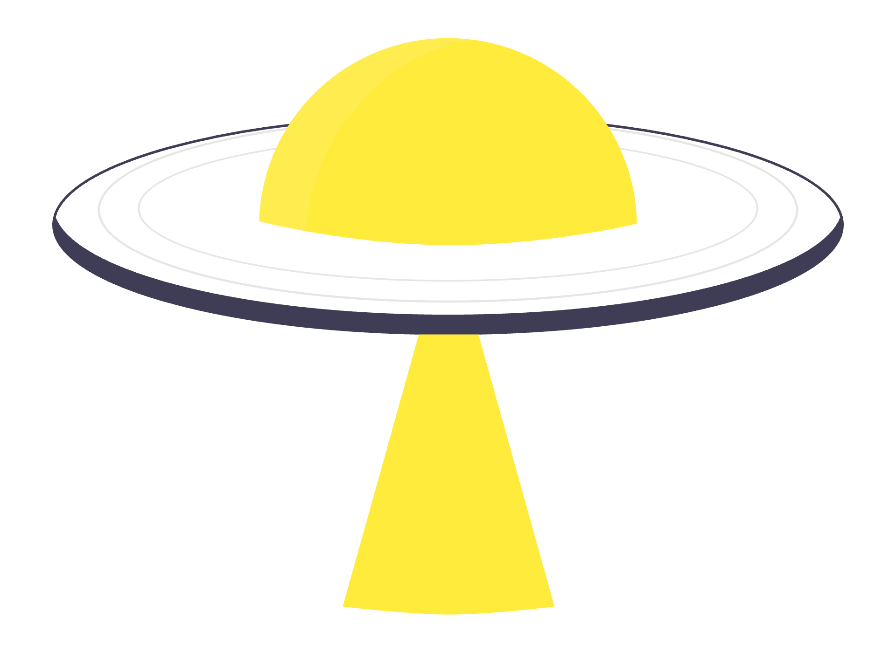
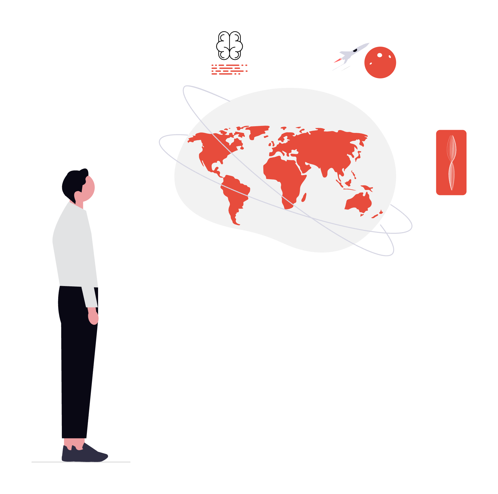
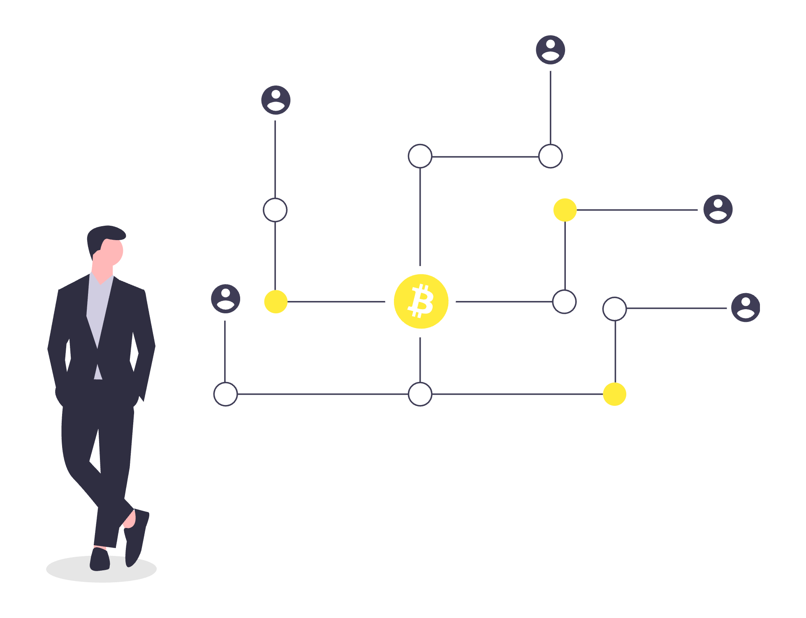

CN6035 · Task 2 · Demonstration
Carbon credits on a public ledger.
Mint. Trade. Retire. All on-chain.

agenda

01 · the problem
A $900bn industry running on PDFs and proprietary registries (UNDP, 2022).
The same offset gets sold to two buyers by two different registries. Nobody catches it because no one can see the full ledger.
Credits "retired" by one firm quietly reappear on another firm's ESG report six months later.
Want to verify a claim? Email a PDF. Wait three weeks. Pray the registry still exists.
"More than 90% of rainforest carbon offsets by biggest certifier are worthless" — Greenfield, The Guardian, 2023
02 · system overview
Mongo is a read-only mirror of on-chain events. Drop the DB, next sync rebuilds it. The chain is always the source of truth.
02b · tech stack
| Layer | Tech | Why |
|---|---|---|
| Contracts | Solidity 0.8.24, OpenZeppelin 5.0, Hardhat | Audited primitives (AccessControl, ERC-1155, ReentrancyGuard) |
| Frontend | React 18, Vite 5, ethers v6, Tailwind | Fast dev loop, first-class MetaMask support |
| Backend | Vercel serverless, Mongoose, Zod | Free tier, zero-ops, checkpointed polling indexer |
| Storage | IPFS via Pinata | Content-addressed metadata, tamper-evident |
| Infra | MongoDB Atlas M0, GitHub Actions | Free cluster, CI on every push |
Every dependency is open-source and inspectable (OpenZeppelin, 2024). No proprietary SDKs. Every secret in encrypted env vars.

03 · smart contracts
Who can register a project and who can approve it.
registerProject(cid) — permissionlessapproveProject(id) — VERIFIER_ROLErecordIssuance(id, amt) — called by creditToken: tokenId == projectId, 1 unit = 1 tCO₂e.
mint(to, id, amt) — MINTER_ROLEretire(id, amt) — burns + emits receiptEscrowed listing book with capped protocol fee.
list(id, amt, price) — escrows creditsbuy(id, amt) — payable, checks-effects-interactionsReentrancyGuardWhy ERC-1155? ERC-20 loses per-project provenance; ERC-721 over-models (credits are fungible inside a project). ERC-1155 is the right shape (Radomski et al., 2018).
04 · blockchain lifecycle
ProjectRegistered(id, owner, cid)queryFilter in 45k chunks05 · live demo
Land on /, see projects and stats with no wallet connected.
MetaMask prompt, auto-switch to Sepolia, address shown in navbar.
Metadata → Pinata IPFS → tx → ProjectRegistered event.
Verifier role in action; CreditsIssued event.
Second account buys; original retires remainder; CreditsRetired receipt on Etherscan.
Full recording on MS Stream (link on cover slide).
06 · quality & security
ReentrancyGuard) ·
unauthorised minting (MINTER_ROLE) ·
double-counting (ERC-1155 burn) ·
fee manipulation (10% cap) ·
leaked secrets (encrypted env vars) (OWASP, 2023).
closing
Thank you. Demo: greenifyrc.vercel.app · Code: GitHub